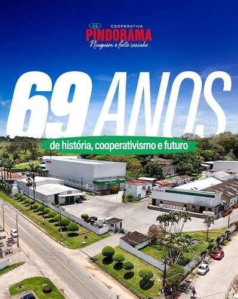

Produção | História | Contato

A cooperativa nasceu da união de pequenos produtores da região, que decidiram trabalhar juntos para fortalecer a produção local.
Sozinhos vamos rápido, juntos vamos mais longe.
Página produzida na aula de programação web - Semana 1.